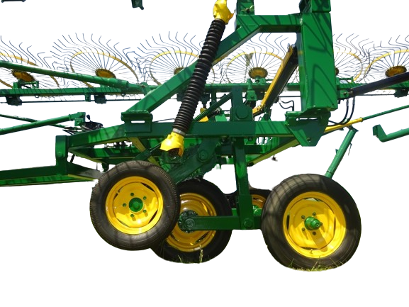
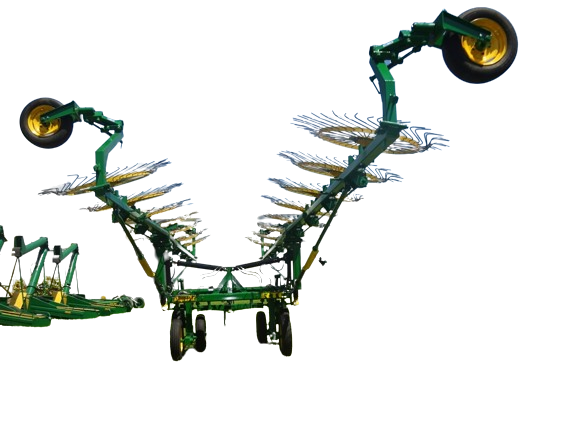
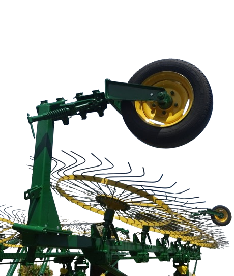
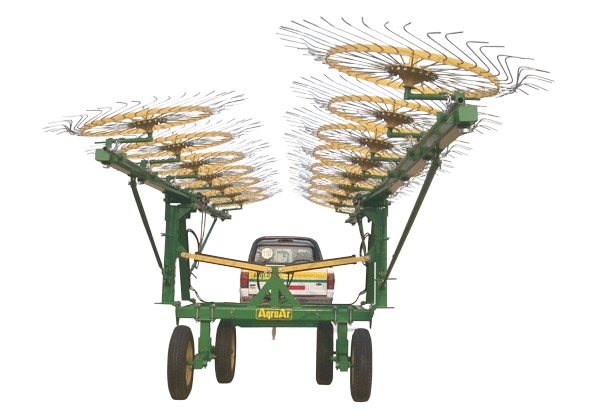
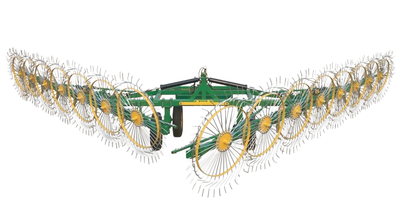

Características Técnicas
Cargador Transportador de Rollos
CTR623
- Capacidad de carga: 6 grandes o 8 rollos chicos.
- Púas cargadoras regulables para rollos chicos o grandes.
- Original sistema de carga/descarga sin elementos o partes sometidas a desgaste.
- 4cilindros hidráulicos sometidos.
- Robusto chasis de acero 140 x 140.
- Dimensiones: Ancho máx. 2,60mts. Largo total 11,80mts. Largo carga útil 9,30/10mts.
- Para utilizar dos cubiertas 400/60 x 15.5
.png)

Desmalezadora Hileradora Cardánica
HC3023
- Ancho de corte: 3mts.
- Ancho de transporte 2,60mts tiro de punta.
- Altura de corte: regulable de 4 a 400mm. Por medio de crique manual o cilindro hidráulico.
- Despeje: 430mm con cielo abulonado.
- Acople tractor: lateral, con tren delantero articulado de gran robustez.
- Rodados: 3-600x16 (sin neumáticos). Rápida colocación, cero compleja.
- Transmisión: cardánica, tres cajas con engranajes cónicos de acero con tratamientos térmicos.
- Chasis: estructura tubular de gran rigidez, con cielo solapado que impide, en posición de corte hilerado, retención y atoramiento, eliminando así el repicado tradicional en pasturas acolchonadas.
- Cuchillas: oscilantes y fijas de acero con doble filo mecanizado.
- Accionamiento: por toma de fuerza de tractor a 540 RPM.
- Peso: 1200kg aprox.


Mezclador y Distribuidor de Ración
M9009
- Capacidad: 9mts. (3500kg aprox).
- Peso: 2.800kg.
- Potencia mínima requerida: 70HP
- Fondo: chapa de acero 3/16 cambiable,con drenaje.
- Sistema de mezclado: Tres sinfines helicoidales horizontales reforzados, uno inferior (614 x 114 x 3/8) y dos superiores (544 x 114 x 1/4) con ejes cambiables en ambas puntas de 80-70 y 50 mm.
- Reducción y transmisión: a cadenas y engranajes de 1 y 1 1/4 doble.
- Reducción y transmisión: a cadenas y engranajes de 1 y 1 1/4 doble.
- Materiales que procesa: silajes de sorgo, maíz y pasturas picados finos. Concentrados y subproductos secos (granos, rollos de heno molido (fibra 3-5mm máx), etc).
- Descarga: noria lateral de 2 sinfines accionada por motor hidráulico de accionamiento independiente.
- Tiempo de descarga: regulable, mínimo 2 minutos.
- Apertura y cierre compuerta descarga: Hidráulica, de accionamiento independiente.
- Regulación de altura de descarga: Hidráulica, de accionamiento independiente.
- Sistema de seguridad:Doble Zafe- con fusible de barra cardánica y engranaje reductor primario.
- Rodados: Balancin 4 - 1000 x 16. Suave y liviano desplazamiento.
- Opcionales: Balanza electrónica | Lona | Placa imantada.




Rastrillo Hilerador
RTC1512
- De 14 y 15 estrellas en V – 7 y 7 o 7 y 8 desencontradas
- Ancho de trabajo: 4 Hileras (10/10.70 Mts. Aprox.)
- Ancho de transporte 2.80 Mts. Plegable en forma hidráulica para transporte hacia arriba (evita roturas).
- Regulación de ancho de trabajo, de ancho de hilera, de altura y de plegado para transporte totalmente hidráulico.
- Estrellas de 40 dientes de 8 mm. Con articulación independiente
- Total 7 cilindros hidráulicos incorporados (2 cilindros hidráulicos de plegado, 1 en eje registro de altura, 2 en el chasis telescópico para modificar el ancho de la hilera y 2 de registro de ancho de labor)
- Balancín (4 – 600x16) para una mayor estabilidad en transporte y trabajo.
- Total 10 neumáticos (4 600x16 y 6 175x13)
Transportadores y Elevadores de Rollos
Transportador de Rollo NTR1
Accionamiento por cilindro hidráulico standard. | Con dos rodados de 600 x 16. | Puntas de ejes: acero telescópicas. | Púas de tubo de acero con posición regulable | Capacidad de carga: 1 rollo de 1000kgs aprox.
- Carro transportador CT5000
- Chasis: Construido en un perfil UPN con barras de refuerzo longitudinales de acero.
- Planchada: chapa punzonada 1/8
- Capacidad de carga: 5 rollos estibados o 6 en 2 líneas. Total 5000kg
- Dimensiones: carga útil 6- 2,40 mts
- Rodados: 750 x 16 u 8 x 600 x 16 duales.
- Accionamiento: por 2 cilindros hidráulicos elevados para posición de transporte. Para ser operado desde el tractor con la bomba hidráulica manual.
- Elevador de rollos ER4000
- Altura carga máxima: 4mts
- Capacidad de carga: 1 rollo hasta 1100kgs
- Rodado neumáticos: 600/650 x 16
- Registro: posibilita llegar al punto máximo de altura con inclinación deseada en horquilla.
- Descanso: posibilita transporte de baja altura de 1 rollo a largas distancias con máx seguridad y resistencia.



Mezclador y Distribuidor de Ración
M7009
RV 1498|15